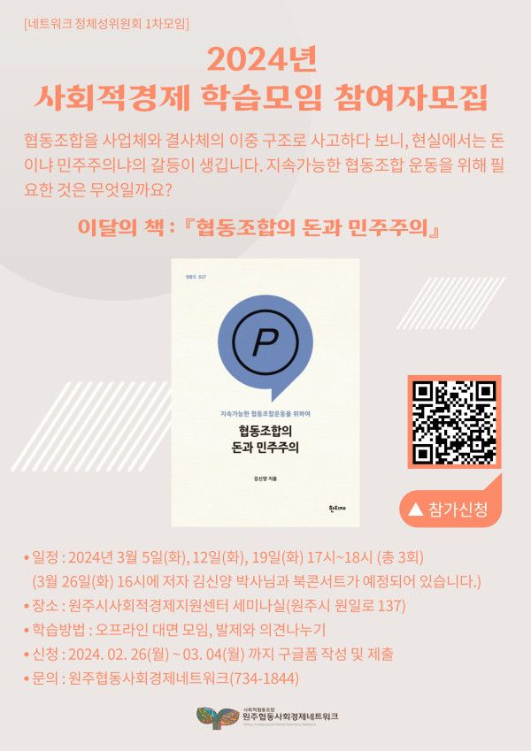

조합원 단체 대상 사회적경제 학습과 네트워크의 새로운 방향성 논의를 위해 <사회적경제 학습모임>을 진행하고 있습니다.
올해부터는 정체성위원회 활동의 일환으로 학습을 진행하는데요.
사업체와 결사체 사이의 협동조합이 지속가능한 운동을 위해 필요한 것은 무엇일까요? 첫 학습은 김신양 박사의 '협동조합의 돈과 민주주의'입니다.
매주 화요일 5시에 학습이 열립니다. 3회의 학습이 끝나고 3월 마지막주 26일(화)에는 저자 김신양 박사님과의 북콘서트가 예정되어 있습니다.
네트워크가 나아갈 방향을 조합원 분들과 같이 학습하며 논의하고 싶습니다. 신청은 구글 링크를 통해 받고 있습니다.
-
<사회적경제 학습모임 참가자 모집>
* 학습기간 : 3월 5일, 12일, 19일 총 3회 (3월 26일 오후4시 북콘서트)
- 첫모임 : 3월 5일(화) 5시 / 원주시사회적경제지원센터 세미나실
- 온라인/오프라인 병행(선택가능)
- 학습할 책 : '협동조합의 돈과 민주주의' - 김신양 지음(네트워크에 소량의 도서가 비치되어 있습니다. 사전에 연락주시면 대여 가능합니다)
* 신청방법 : 포스터 내 QR코드 접속 후 신청서 작성 및 제출
또는 링크 접속 후 신청서 작성 및 제출 https://forms.gle/4DNv6CuopJ58vuiG6
* 학습문의 : 원주협동사회경제네트워크(734-1844)